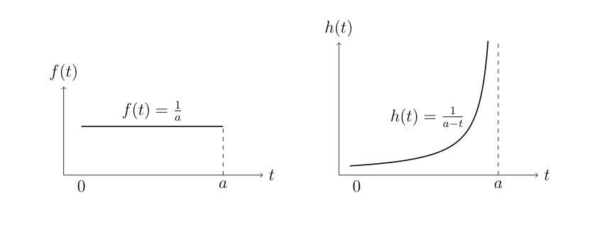

(i)
\[
\begin{aligned}
P(t\leq T<t+\delta t\mid T\geq t)
&=\frac{P(t\leq T<t+\delta t)}{P(T\geq t)}\\
&=\frac{F(t+\delta t)-F(t)}{1-F(t)}\\
&\approx \frac{f(t)\delta t}{1-F(t)}\\
&=h(t)\delta t
\end{aligned}
\]
(ii)
\[F(t)=\frac ta,\qquad 0<t<a\]
\[f(t)=F'(t)=\frac1a\]
\[h(t)=\frac{f(t)}{1-F(t)}=\frac{1/a}{1-\frac ta}=\boxed{\frac1{a-t}}\]

(iii)
\[
\begin{aligned}
h(t)=\frac{f(t)}{1-F(t)}&=\frac1t\\
\frac{F'(t)}{1-F(t)}&=\frac1t\\
-\ln(1-F(t))&=\ln t+C\\
1-F(t)&=\frac{C}{t}
\end{aligned}
\]
\(\because T>a,\ F(a)=0 \implies C=a\)
\[\implies F(t)=1-\frac at\]
\[\therefore \boxed{f(t)=F'(t)=\frac{a}{t^2},\qquad t>a}\]
(iv) When \(\displaystyle h(t)=k,\qquad t>b\)
\[
\begin{aligned}
\frac{F'(t)}{1-F(t)}&=k\\
-\ln(1-F(t))&=kt+C\\
1-F(t)&=Ce^{-kt}
\end{aligned}
\]
\(\because h(t)=0\) for \(t\leq b,\quad F(b)=0\)
\[1=Ce^{-kb}\implies C=e^{kb}\]
\[1-F(t)=e^{-k(t-b)}\]
\[F(t)=1-e^{-k(t-b)}\]
\[\therefore f(t)=F'(t)=ke^{-k(t-b)},\qquad t>b\]
\[\therefore h(t)=\frac{ke^{-k(t-b)}}{e^{-k(t-b)}}=k\]
\[\boxed{h(t)\text{ is constant for }t>b\iff f(t)=ke^{-k(t-b)}}\]
(v)
\[h(t)=\left(\frac{\lambda}{\theta^\lambda}\right)t^{\lambda-1}\]
\[
\begin{aligned}
\frac{F'(t)}{1-F(t)}&=\frac{\lambda}{\theta^\lambda}t^{\lambda-1}\\
-\ln(1-F(t))&=\int_0^t \frac{\lambda}{\theta^\lambda}u^{\lambda-1}\,du\\
-\ln(1-F(t))&=\frac{t^\lambda}{\theta^\lambda}\\
1-F(t)&=e^{-(t/\theta)^\lambda}
\end{aligned}
\]
\[\therefore f(t)=h(t)(1-F(t))\]
\[\boxed{f(t)=\frac{\lambda}{\theta^\lambda}t^{\lambda-1}e^{-(t/\theta)^\lambda},\qquad t>0}\]